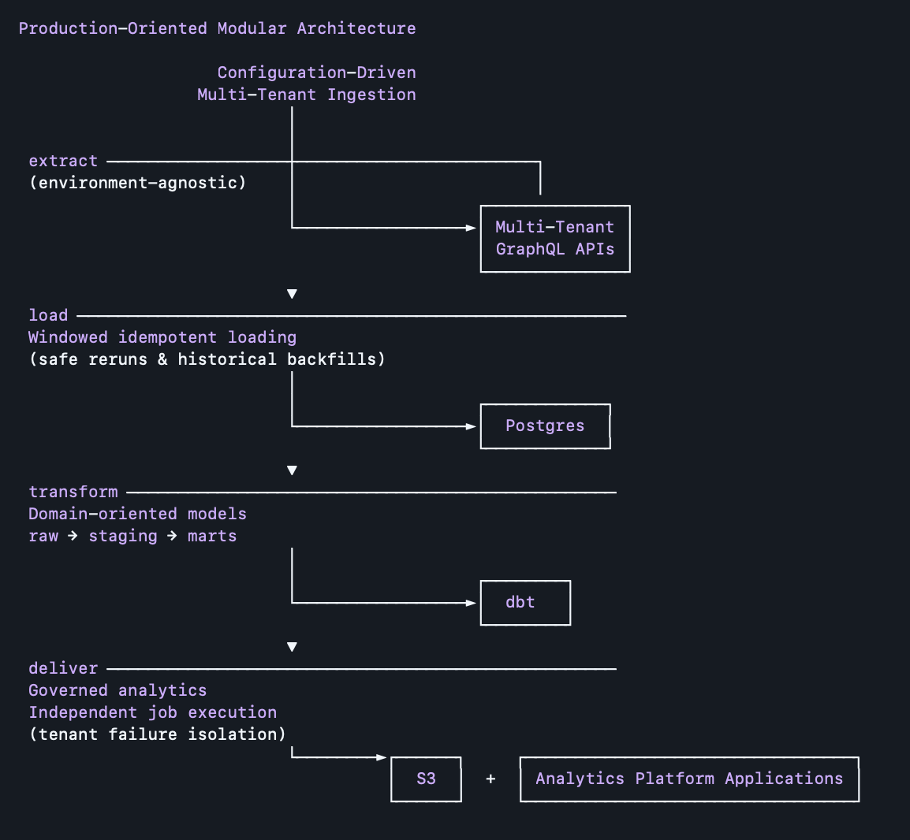
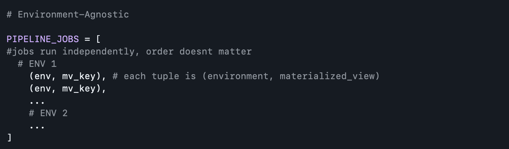
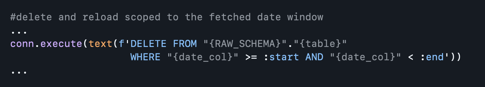
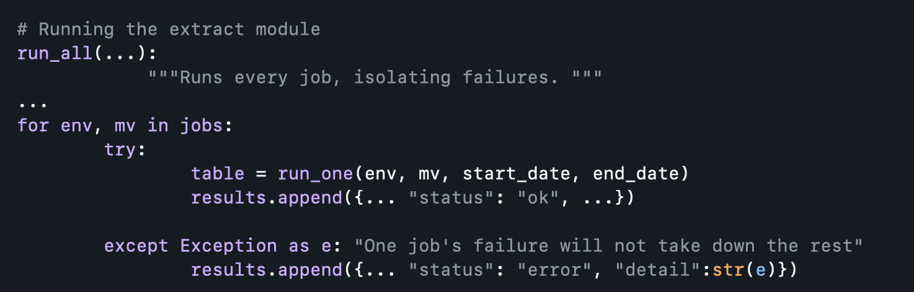

Designed a production-grade ELT pipeline that centralized product telemetry from isolated, database-per-tenant GraphQL APIs into a governed analytics platform. The architecture was intentionally designed around several production constraints, including tenant isolation, restricted database access, and operational reliability. I used a configuration-driven multi-tenant ingestion framework, windowed idempotent loading for safe reruns + historical backfills, and independent job execution that isolates tenant failures without interrupting other workloads. Built with an environment-agnostic architecture, the pipeline scales across 15 tenant environments and 75 monthly ingestion jobs while delivering governed datasets that enable historical and cross-environment product analytics. I introduced dbt to the company with this project.
Domain: Enterprise Software Platform
Data: Product Analytics Telemetry

Data was intentionally separated behind multiple isolated GraphQL API endpoints with predefined views. Each endpoint required independent ingestion and processing to preserve logical data separation. This prevented the ability to perform historical trend analysis and cross-environment comparisons necessary to deliver a range of analytics features within the product platforms analytics applications. Additionally, if we wanted to maintain principle-of-least-privilege (POLP) there had to be a vehicle providing internal teams with safe access to the data they needed.
The multi-tenancy framework utilizes datbase-per-tenant. Direct database access was intentionally prohibited for SOC compliance, to prevent tenant cross-contamination, and protect operational database performance.
A GraphQL application layer provided precomputed analytics events via PostgreSQL materialized views (heartbeats, tab navigations, content views, etc.) which are refreshed at intervals ≤ 24hrs. Querying live tables introduce performance risk, security concerns, and inflexibility.
Materialized Views solve this by providing:
Given there are multiple isolated environments, and they each require independent ingestion, the entire extract module was designed to prepare for the scale of oncoming tenants. 10 environments of interest could turn into 100, and custom code for each would be difficult to maintain or debug.

For this reason, the ingestion code was environment-agnostic, meaning it worked generically. Whenever a new env was needed, it was simply an entry to the configuration.
Every stage of the pipeline can be executed independently. There were many moving parts and structures were expected to change. A modular design choice prevented structural specific (source of data or final landing) changes from disrupting other processes. I wanted an easy way to adapt if need be.
If something were to go wrong and I needed to re-run, I wanted to prevent duplicating the existing data or losing historical continuity by unintended deletion (aka preventing reruns and backfills). This layer utilized idempotent window-based loading. Idempotency means repeated execution lands on the same final state. So running many times gives the same result as if you were to run once. Delete-then-reload is scoped to the fetched date window, tagged with a timestamp, not by full-table replace.

My experience with APIs led me to understand that failures would happen.

One example I dealt with during this development was an environment moving to a new tenant was not completely recognized in the application layer, so a stalled MV refresh resulted in empty rows on my pipeline. I wanted to be able to isolate failures and not take down the entire pipeline if one were to occur.
I introduced dbt-core to the company with this project. Previously we struggled with version-controlled querying. Given the scope of our analytics I wanted to standardize everything.
A staging layer was important because there were known duplicates resulting from the MV grain, such as a user belonging to a group. I was able to maintain data quality by standardizing this dedupe in a dbt macro test.
I also separated the staging layer by domain of the product telemetry as opposed to by tenant, which would hinder the scalable design.
designed to scale for 50+
across all tenants and tables
across the whole pipeline
A reporting database in our use case would be a dedicated cluster that absorbs heavy analytical queries from ETL orchestrators (Apache Airflow) & BI Tools, keeping them off production transactional systems.
The main challenge in bringing this improvement to development are resource contrainsts for a lean engineering team and the justification of introducing new costs. When proposing any major architectural changes I work alongside our Director of DevOps in drafting solutions.
I work closely with our Director of DevOps (we have a small team) who has helped me introduce tools like Apache Airflow to the company by building the server-side infrastructure.
In this project-scope every database is behind a bastion, and in order to reach all databases, we have to be able to safely access and traverse those environments concurrently. This makes our current orchestration tool Apache Airflow (MWAA) a not-so-attractive choice in the current setup.
A lesson I learned was not assuming that a tool I reliably used in the past would easily apply in the same way to another project.
I currently use the built-in dbt source freshness monitoring within each _sources.yml file and a small variety of custom dbt macro tests (such as asserting uniqueness across a grain).
I want to thoughtfully improve upon all existing tests before accelerating the frequency of runs.
For a single tenant, the approximate scale is ~150,000 rows per month, all tables combined. Where each table is '<tenant>_<materialized_view>'. Our architecture as it stands is deliberately per-tenant tables, so the tenant count itself doesn’t multiply any single tables size.
Quick Approximate Math
For a single tenant with ~150,000 rows per month:
So when would it matter?
If later we wanted to share cross-tenant table instead of per-tenant, we’d be approaching the need for incremental models as a planned decision as opposed to something growth forces upon us.
The analytics apps the pipeline currently serves match the reporting need (monthly trends).
Once a roadmap to orchestration is better defined we can design a path to smaller batches per run and increase the frequency of runs to weekly/daily.